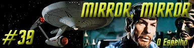
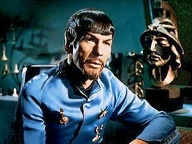
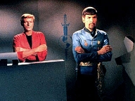
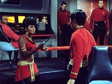
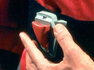
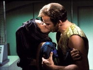
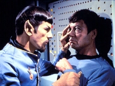
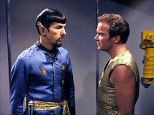

|
Série
Clássica
Temporada 2

análise do episódio por
Carlos
Santos


|
MANCHETE
DO episódio Data Estelar: Desconhecida. Ao retornar
de uma negociao para explorar as reservas de cristais de dilithium com o
povo conhecido como Halkans, Kirk, McCoy, Scotty e Uhura, uma tempestade inica
causa uma falha na aparelho de tele-transporte envia o grupo para universo
alternativo onde a Federao um imprio construdo pela fora e opresso. O grupo
descobre que se materializou em uma nave idntica a sua, mas observa diferenas
sutis a principio, como os uniformes da tripulao e uma barba antes
inexistente em Spock. após tomar conhecimentão da forma como seus duplos agem
neste universo, Kirk descobre que tem ordens de atacar os Halkans e subjug-los
pela fora.  Enquanto
isto, a bordo da U.S.S Enterprise, os duplos de Kirk, Scott, McCoy e Uhura so
presos após a tripulao da nave constatar que o comportamentão irracional
destes. Na I.S.S
Enterprise, Kirk atacado por Chekov, que tenta mat-lo para subir na escala
de comando da Enterprise, ocorrncia comum neste universo. O plano fracassa graas
a um dos comparsas de Chekov, que muda de lado e livra Kirk da enrascada, e o
russo punido com tortura.  Kirk vai at
o seu alojamento, onde encontra uma mulher, a tenente Marlena Moreau, que no
universo espelho parece ser a companheira de Kirk, que mantm a farsa. Spock
cumpre o prometido e informa aos seus superiores sobre o comportamentão de Kirk,
e recebe ordens de matar o capito e assumir o comando da nave caso ele
continue em seu curso de aa, entretanto o Vulcano resolve avisar seu capito
sobre isto, dando a Kirk uma chance de escapar.  Neste meio
tempo Scotty descobre que o portal entre os dois mundos está se fechando,
deixando a Kirk e seus oficiais cerca de meia hora para deixarem o universo
paralelo. Eles se preparam para executar o plano, mas Spock, que investigava as
atividades do computador desconfia da pesquisa executada por Scotty. Tal
atividade também notada por Sulu. Kirk deixa
seu alojamentão para dar andamentão ao seu plano de fuga, sem saber que Marlena
agora acompanha seus movimentos usando o campo Tantalus. Uhura distrai
Sulu para que Scotty possa fazer as modificaes necessrias não transporte, e
em seguida deixa a ponte para encontrar o restão do grupo na enfermaria. Enquanto
preparava o aparelho de transporte para lev-los de volta, Kirk surpreendido
por Spock. Ele leva Kirk até a enfermaria, onde todo o grupo surpreendido.
De sbito Kirk ataca Spock, e iniciando-se uma luta. Spock vencido pelos
quatro, ficando entre gravemente ferido após receber uma pancada na cabea.
McCoy se recusa a ir embora e deixar Spock sem tratamento, apesar do seu tempo
estar se esgotando. Enquanto o
grupo aguarda McCoy, Sulu chega com uma equipe de segurana. Ele pretende matar
a todos e assumir o comando, mas Marlena, que observava pelo campo tantalus,
desintegra a equipe de segurana de Sulu, e deixa Sulu No Mano a mano com Kirk.
O capito derrota Sulu e o grupo finalmente deixa a enfermaria, ainda sem McCoy,
que continua a cuidar do vulcano.  Num uúltimo ato, Kirk tenta convencer Spock a liderar uma revoluo contra o Imprio, e Spock promete pensar não assunto. Finalmente o grupo volta ao seu universo, assim como seus duplos so devolvidos ao universo espelho.
O
que aconteceria se os oficiais da USS Enterprise fossem jogados em um universo onde a Federao uma
organizao rgida, impiedosa e Cruel? Mirror,
Mirror puro high
concept. Sua trama origina-se do conceito apresentado acima, e junta
o clssico clichá do mau funcionamentão do tele-transporte com
o tema das dimenses paralelas (que durante muito tempo foi um dos
temas favoritos da ficção cientifica) para viabiliz-la. Melhor impossível. A
prova de que tal mtodo de construo não necessariamente ruim que
este considerado um dos melhores episódios da Serie Clássica, e melhor da
segunda temporada. O sucesso da empreitada fruto do arranjo correto destes
elementos, e da existncia de personagens com caractersticas bem definidas.  Um
ambiente onde o espelho da Federao democrítica e pacifica que conhecemos
um imprio brutal, desumano e cruel.. Os sinais de que este Imprio foi
baseado não regime nazista so claros e bvios, desde a simples saudao caracterstica, até a nsia
conquistadora desta instituio, passando pela presena do representante da
policia poltica da Alemanha Nazista, a Gestapo. O que não to claro e to obvio que o Universo Espelho na verdade mais uma referencia velada ao então regime comunista sovitico, mais uma vez sutilmente criticado atravs de um enredo de televisão camuflado de ficção cientifica. Neste
sentido o segmentão deixa o high-concept inicial e parte para uma viagem no
ambiente histrico da época. Em que foi construdo, trazendo ai a verdadeira
marca registrada de Jornada nas Estrelas,
não que ela tem de mais relevante. Se
analisarmos bem os paralelos, Hitler não foi vencido por um visionrio, mas por uma aliana
que convergia pensamentos radicalmente diferentes de grupos que não tiveram opo
naquele momentão senão unir suas foras contra um mal maior. J a queda
do regime sovitico teve seu eixo canalizado atravs da figura de um libertador, o
então primeiro ministro Gorbachev. Ao final do episodio Kirk sugere ao Spock do
universo espelho que assuma este papel, e anos mais tarde saberamos atravs
de DS9 (Crossover) que ele
efetivamente o fez. De
forma intencional ou no, o segmentão nos panfletrio/ em sua
critica ao regime comunista, que se expandiu pela fora e que se manteve o
quanto pode pelo medo, quanto proftico ao prever a necessidade de um visionrio,
que fomenta mudanas a partir do prprio regime, para finalmente derrub-lo,
como Kirk sugeriu a Spock.  A
necessidade de salvar os Halkans serve também para garantir o necessrio censo
de urgncia ao episodio, justificando que os personagens tomem atitudes que
poderiam denunci-los, além claro, da posterior descoberta por parte de
Scotty de que do fechamentão gradual do portal entre os dois mundos, alegado por
Scotty. E
justamente ai que entra mais vez o personagem Spock, que conseguiu ao longo da
primeira temporada estabelecer um padro de comportamentão que torna
perfeitamente lgico (na falta de palavra mais original) que o Vulcano seja o
elementão catalisador do segmento. Ser ele que permitir enfim o retornão de
Kirk ao seu universo e conseqentemente a volta de seu capito correto
ao universo espelho. O
mais interessante que mesmo não caos absoluto, Spock consegue atravs do seu
raciocnio analtico, se equalizar entre os dois universos de forma
equilibrada, sem divergir muito do seu jeito Vulcano de ser, e ainda
assim, o seu espelho parece to
bem acomodado quanto o Spock que conhecemos. Tornando este o grande charme do
episodio. Alias a trama usa muito bem todos os elementos que aprendemos a reconhecer na Serie Clássica, desde a composio poltica e social de seu ambiente, até o comportamentão de alguns de seus principais personagens, passando pelos conceitos morais que a Série afirmou até chegar a execuo do universo espelho, onde ela literalmente inverte este conceito e explora o resultado, e justamente esta explorao, na sua forma, que faz o sucesso do episodio. No
mais, Kirk permanece matador não quesito mulheres, Scott e McCoy vo bem, com
destaque um pouco maior para o segundo. Embora nosso engenheiro chefe aparea
pouco, sobre ele que paira toda a responsabilidade de fazer o grupo retornar,
o que torna sua participao decisiva e deixa Kirk livre para fazer o segmento
funcionar, junto com o Spock espelho.  Algumas
concesses so necessrias, para o bem do episodio, como o fato dos uniformes
serem inexplicavelmente trocados não transporte, a manutenão de forma
arbitraria do mesmo comportamentão por parte dos Halkans nos dois universos, algo
um pouco estranho de se aceitar, e um exagero entre as correspondncias dos
dois universos, que permitem a cada um deles andar lado, em detalhes, que
permitem acontecimentos como transporte simultneo dos grupos avanados com a
mesma composio nos dois lados, algo virtualmente impossível, mas para
isto que existe a suspenso de descrena, logo deixemos de lado estas pequenas
questes. Um episodio divertido, bem executado, com varias reviravoltas e surpresas ao longo de sua execuo. Por fim deve-se comentar que a tirada de Spock não tradicional alivio cmico que conclui o segmentão daria um bom tratado de antropologia, e finalizar dizendo que Mirror, Mirror tem bala na agulha suficiente para manter o posto de um dos mais aclamados episódios da Srie Clássica.
Kirk: "Conquest
is easy. Control
is not." Kirk:
"If
change is inevitable, predictable, beneficial... doesn't logic demand
thaté you be a part of it?" Spock:
"One
man cannot summon the future." Kirk:
"In
every revolution, there's one man withá a vision." McCoy:
"You're a man of integrity in bothá universes, Mister Spock."
Escrito por Jerome Bixby Elenco: John
Winston como Kyle |